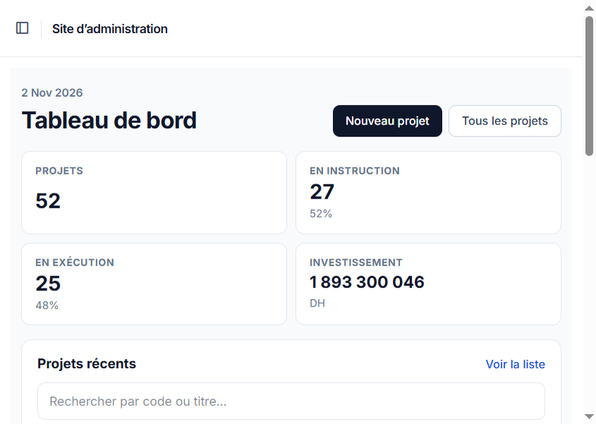
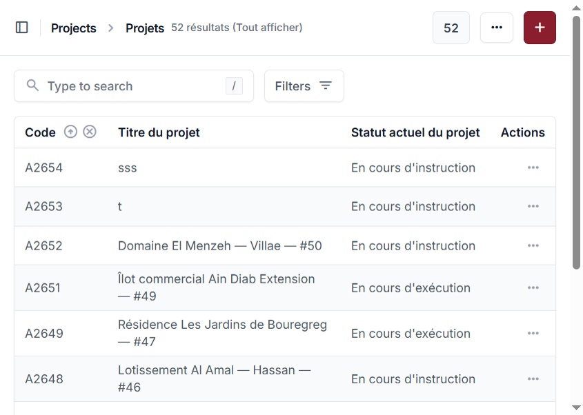
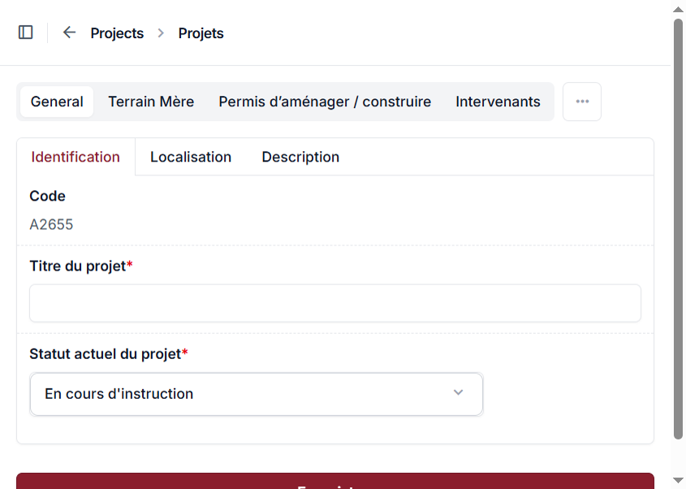
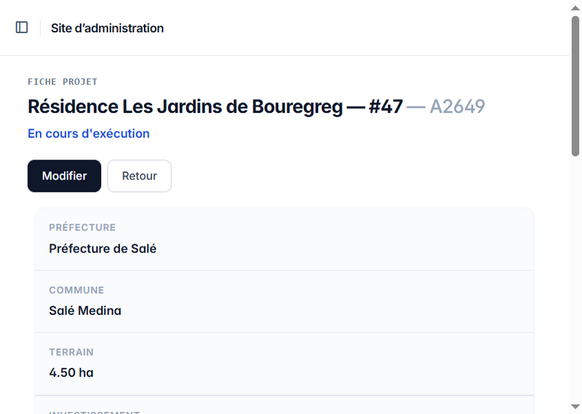
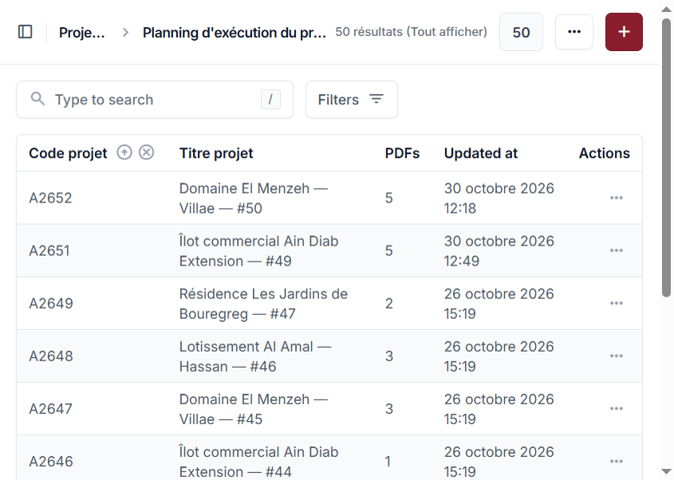
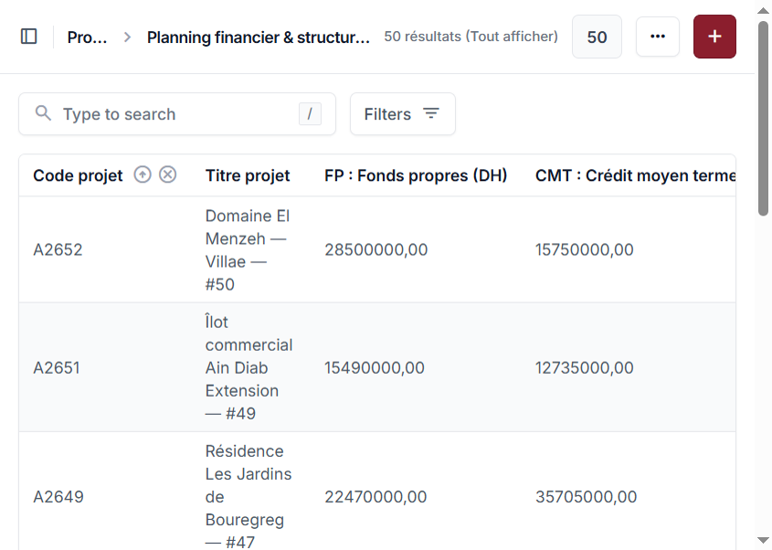
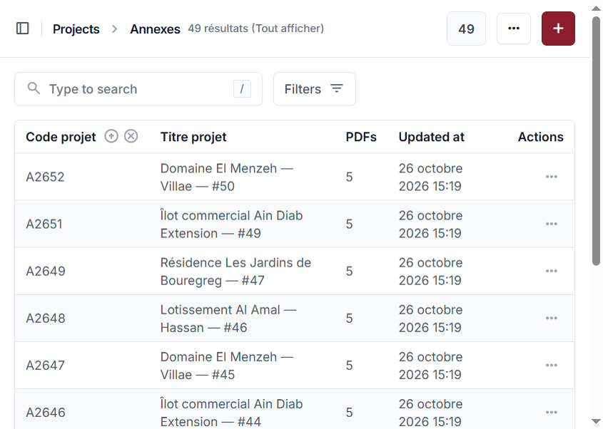

2os Gestion
Plateforme de gestion des projets immobiliers : fiches techniques, financement, planning d’exécution et annexes documentaires.
Objet du document
Présenter le contexte, les fonctionnalités, l’architecture et les écrans clés de l’application, avec captures réelles de l’interface.
Public cible
Équipe métier, direction de projet, développeurs et formateurs chargés du déploiement / démonstration.
Chapitre 1
1. Introduction et contexte
2os Gestion est une application web d’administration destinée au suivi opérationnel de projets immobiliers (lotissements, résidences, opérations commerciales). Elle centralise, dans un seul espace sécurisé, les informations de référence du projet et les documents associés.
L’interface est en français. L’accès se fait via un compte administrateur /
staff Django. L’application tourne en local sur
http://127.0.0.1:8000/admin/.
1.1 Chiffres actuels (base de démonstration)
1.2 Positionnement
Chapitre 2
2. Problématique et objectifs
2.1 Problématique
Sans outil dédié, les informations projets (titres fonciers, permis, plans, PDF de phases, montants FP/CMT) sont dispersées dans des dossiers partagés et des tableurs. Cela complique le suivi du statut, la recherche d’un dossier et la traçabilité des pièces.
2.2 Objectifs
- Donner un code projet unique (ex. A2649) et une fiche complète.
- Suivre le statut (instruction / exécution) et l’archivage.
- Rattacher les documents PDF au bon module (technique, planning, annexes).
- Offrir une navigation rapide (recherche, listes, fiche à onglets).
- Permettre la saisie multi-onglets sans perte de données.
Chapitre 3
3. Périmètre fonctionnel
| Module | Rôle | Contenu principal |
|---|---|---|
| Projets | Cœur métier | Identification, localisation, description, terrain mère, permis, intervenants, documents techniques, images |
| Planning financier | Structure financière | Fonds propres (FP), crédit moyen terme (CMT), total investissement, PDF de financement |
| Planning d’exécution | Suivi de phases | Études / Viabilisation / Réception — plusieurs PDF par phase |
| Annexes | Pièces administratives | Dossier PDF (ANCFCC, plans, attestations, cahier des charges…) |
| Tableau de bord | Pilotage | Compteurs, investissement agrégé, projets récents, accès fiche |
Chapitre 4
4. Architecture technique
L’application repose sur Django avec le thème admin Unfold. La navigation interne utilise HTMX pour une expérience de type SPA (sans rechargement complet), tout en conservant des rechargements complets pour l’authentification (CSRF).
media/ · Auth Django (staff / superuser)4.1 Stack
- Python / Django 6.1
- django-unfold (UI admin)
- HTMX 2, Alpine.js
- Select2 (listes recherchables)
- Stockage fichiers PDF / images via FileField
Chapitre 5
5. Modèle métier (données)
Le modèle pivot est Project (code auto, titre, commune, statut, archive…). Autour de lui gravitent des entités liées :
| Entité | Relation | Exemple de champs |
|---|---|---|
| TerrainMere | 1–n / formulaire inline | Titre foncier, superficie, unité |
| Autorisation | Permis | Type, numéro, date |
| Intervenant | M2M | Nom / cabinet, contact, type |
| StructureFinancement | OneToOne | FP, CMT, total |
| PlanningExecution | OneToOne | Documents PDF par phase |
| AnnexeDossier | OneToOne | Pièces PDF typées |
| ProjectDocument / ProjectImage | 1–n | Techniques, photos chantier |
Chapitre 6
6. Parcours utilisateur
6.1 Création d’un projet
6.2 Consultation métier
6.3 Recherche globale
La barre Type to search interroge les 4 types (Projet, Planning financier, Planning d’exécution, Annexes) et renvoie vers la fiche ou la liste filtrée, avec mise en évidence de la ligne.
Chapitre 7
7. Interfaces détaillées (captures réelles)
7.1 Tableau de bord
Point d’entrée après connexion. Affiche le volume de projets, la répartition instruction / exécution, l’investissement total et la liste des projets récents.

7.2 Liste des projets
Changelist filtrable (statut, préfecture, commune, archivé). Les colonnes Code / Titre / Statut ouvrent la fiche projet.

7.3 Formulaire d’ajout / édition
Saisie structurée par onglets Unfold : Identification, Localisation, Description, puis Terrain Mère, Permis, Intervenants, Documents, Images. Le code projet est prévisualisé puis attribué à l’enregistrement.

7.4 Fiche projet (consultation)
Vue lecture orientée métier : en-tête (titre, code, statut), résumé (préfecture, commune, terrain, investissement) et navigation par onglets (Général → Annexes).

7.5 Planning d’exécution
Liste des plannings avec compteur de PDF. Un clic ouvre la fiche sur l’onglet Planning (phases études / VRD / réception).

7.6 Planning financier
Visualisation des montants FP / CMT et du total. Lien vers la fiche onglet Financement.

7.7 Annexes
Dossiers de pièces jointes PDF par projet. Accès fiche onglet Annexes.

Chapitre 8
8. Fonctionnalités transverses
#main sans recharger
toute la page, sauf login / logout (CSRF).
Chapitre 9
9. Sécurité et qualité
- Authentification Django (staff / superuser) — pages admin protégées.
- Protection CSRF sur les formulaires POST (login inclus).
- Uploads restreints (extensions PDF / images selon le champ).
- Tests unitaires / fonctionnels sur parcours clés (codes projet, upsert planning, recherche, etc.).
maryam —
mot de passe mary1234. À ne pas réutiliser en production.
Chapitre 10
10. Bilan et perspectives
10.1 Apports
- Un référentiel projet unique et consultable rapidement.
- Traçabilité documentaire (financement, planning, annexes).
- UX admin moderne (Unfold) adaptée au métier immobilier marocain (préfecture, commune, titres fonciers…).
10.2 Pistes d’évolution
- Export Excel / reporting consolidé.
- Droits fins par rôle (lecture seule / saisie documents).
- Notifications d’échéance (permis, réception).
- Base PostgreSQL et déploiement Docker en production.
- Historique d’audit des modifications sensibles.
10.3 Conclusion
2os Gestion répond au besoin de centraliser le suivi des projets immobiliers : de la fiche d’identification jusqu’aux PDF de planning et d’annexes, avec une interface d’administration cohérente et démontrable.